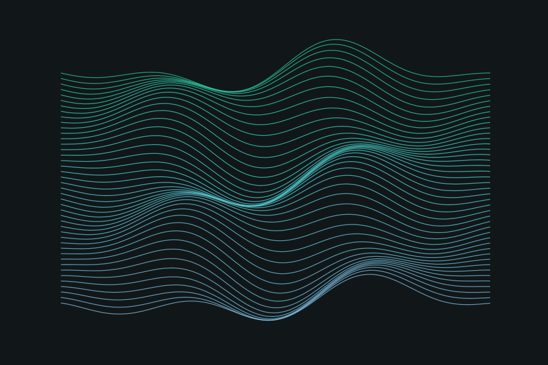
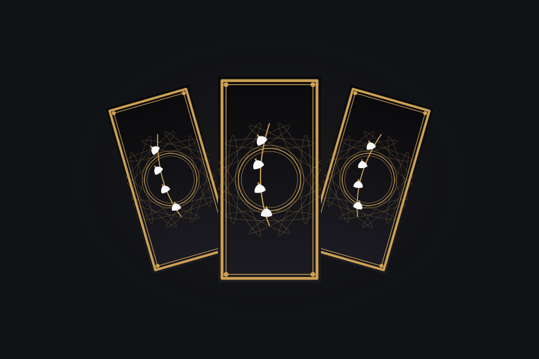
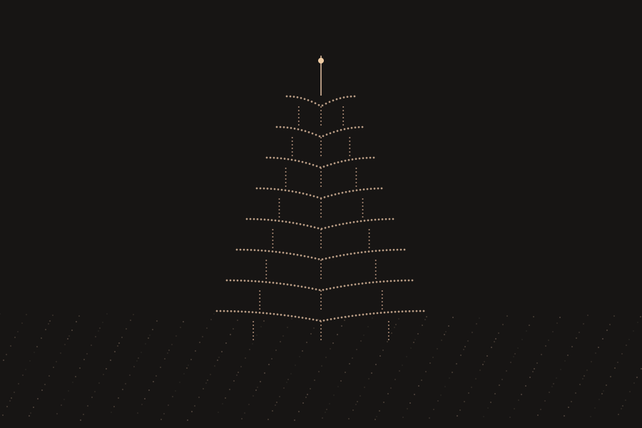
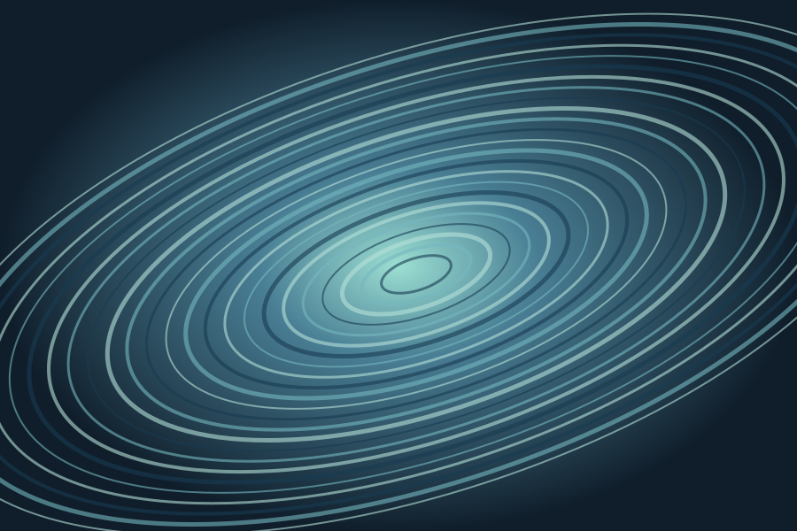

一些正在发生的实验
从这里，进入另一个世界。

鼠标互动Sand & resonance
3D 沙纹
拖动视角，调节光影。看见声音般的起伏，长成自己的形状。

摄像头 / 手势A little serendipity
每日塔罗
在光点和卡牌之间，给今天留一点偶然。放轻松，当作一场小游戏。

摄像头 / 手势Architecture in particles
粒子古塔
古老的轮廓，轻盈的粒子。伸出双手，与一座数字古塔相遇。

摄像头 / 手势A world made liquid
液态涟漪
让镜头里的世界缓缓融化。在液体与晶体之间，发现另一种日常。
显示全部 4 个网站
封面为图形示意，实际互动效果请进入网站体验。
SHJ的实用小工具
做图、排版，随手打开就能用。
关于这里
不必有什么用，
好玩就很好。
这里收集了 SHJ 做过的小网站。有些关于光影，有些关于手势，有些只是一个突然冒出来的念头。它们各自独立，也一起住在这里。
体验提示：部分作品需要摄像头权限和浏览器图形加速，首次加载也可能稍久。建议使用新版 Chrome 或 Edge；只想随手玩玩，可以先试试 3D 沙纹。